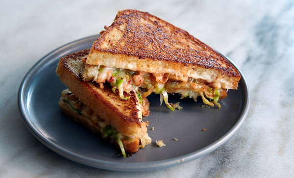

Kimchi Cheesie

Spicy and zesty Kimchi Cheesie
This quick and easy cheesie recipe is perfect for the homebody who
just wants that extra kick in the tastebuds to spicen things up.
Ingredients
- 100g Spicy Kimchi
- 1 Chilli Sausage
- 250g Cheese
- 2 slices of Bread (your choice!)
- 1 Tbspn Olive oil
Directions
- Preheat oil in a frypan. Once oil is smoking slightly add Chilli
sausage and cook evenly about 6 minutes. Remove from heat and
slice into thin pieces.
- Add back chilli sausage and crisp flat ends of slices. Throw kimchi
into the pan and allow to cook until slightly golden/starting to crisp.
- Add bread into sandwich press or frypan. Fill with toppings and cheese.
- Once golden remove from heat and serve hot.